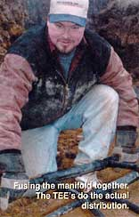

Installation of a geoexchange system is not so much difficult as it is time-consuming. The installer needs to have an excellent background in ducting, high-voltage (240-volt) and low-voltage (24-volt) controls wiring, plumbing, loop purge and fill procedures, and a working knowledge of refrigeration systems. The majority of heating and air conditioning contractors do not have technicians with the background necessary to handle a geoexchange in stallation like an experienced and certified GSC. Conventional heating contractors tend to focus on relatively simple, one-day furnace and air-conditioning installations. By contrast, a closed-loop geoexchange installation can take a crew of three workers up to five working days to complete a project, with roughly 60% of the time dedicated to installing piping and filling the loop.
If you decide to move ahead on your own, you should still use a local GSC as a source of information and possibly as a service partner to look after the system while you're installing it. The services Geo-Source One provides for those who wish to take a direct role in a system installation include establishing a contract as a consultant in the project, performing an energy analysis for the home, sizing equipment, designing ductwork and closed loop, and providing for delivery of equipment materials and any specialty tools needed for installation. As construction progresses I arrange for site inspections and assistance where the tasks may exceed the time or ability of the owner. I find this method of managing a DIY project adds con s istency to the installation and helps to avoid many of the potential pitfalls that can beset a "first-time" installation.
In addition to the trenching and pipe laying work outlined in the main article , you'll need to adapt your ductwork to fit a geoexchange system.
On main floors, the supply air registers are located six inches from outside walls and positioned beneath windows or adjacent to outside doors. The return air intakes for the first- and any upper-level floors are all situated "high side wall" (HSW). The return air in a finished basement is located "low side wall" (LSW). I've found this means of collecting return air produces the most uniform temperature within the structure, with little more than a few degrees difference between basement- and upper-level temperature. By comparison, older duct designs that use low side wall or floor level returns have inherently warm ceilings, cold drafty floors and a basement area that is cold and uncomfortable year round. Constantly operating a fan in these situations helps a little, but serves more to create cold drafts since the bulk of the circulation is from the cold floors.
Every contractor has a preference for ducting material, and for trunk lines the favorite is usually sheet metal. My preference, however, is a ridged, foil-faced fiberglass product called duct board. Available from a number of sources, duct board is shipped in cartons of 4x10 sheets. The sections can be shipped flat and assembled on-site. When properly installed, the high-density duct board maintains a system with no air leakage. Also, the people in whose homes we run duct board trunk lines do not notice the "white noise," or random popping and booming caused by the expansion and contraction of metal trunk lines. The use of flexible canvas collars at connections to the system will also help reduce any harmonics between motors and sheet metal. However, air turbulence within the sheet metal will still produce some noise at the registers.
With the proper advice and guidelines, laying your home's geothermal piping can be challenging (but moneysaving) work. Here are a few pointers to help you dig safely:
-Before you dig, contact the local utility location service. Allow plenty of time for their agents to mark out the site and locate any underground utilities.
-Mark utility easements, septic tanks, tile fields, water well casings and underground piping that needs to be avoided.
-Figure out where excavated soil will be stored as an area is cleared and keep it away from the edges of any trench to prevent cave-ins. Trench spoils should sit at least three feet back from any five-foot trench wide enough to hold a person. In a trench that big, even a small cave-in can involve more than 1,500 pounds-a weight you do not want plummeting in on top of you. Complete all work in a trench as quickly as possible and get out. Also, it's a good idea to work out an alternative means of escape from any excavation. A ladder works well, but I often carry a shovel and place it across the top sides of the trench. This way, a quick jump and pull-up can make for a quick escape.
|
 |
|
|